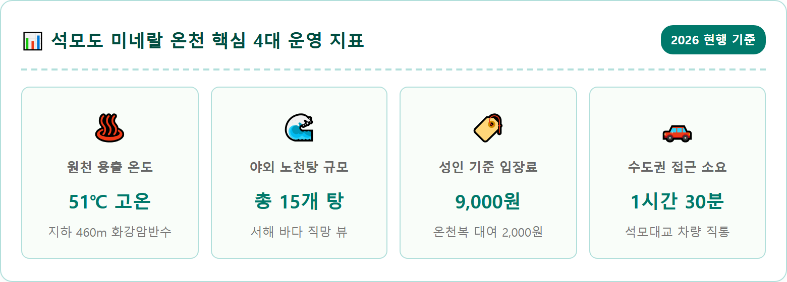
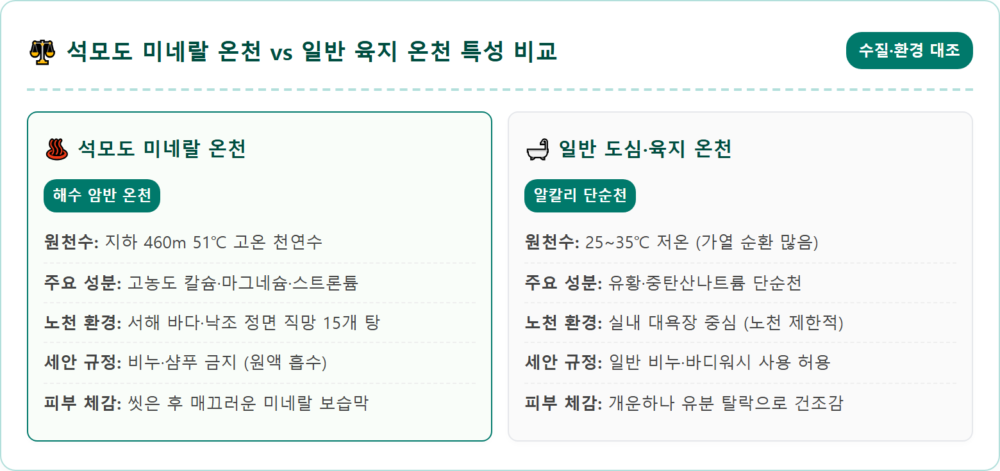
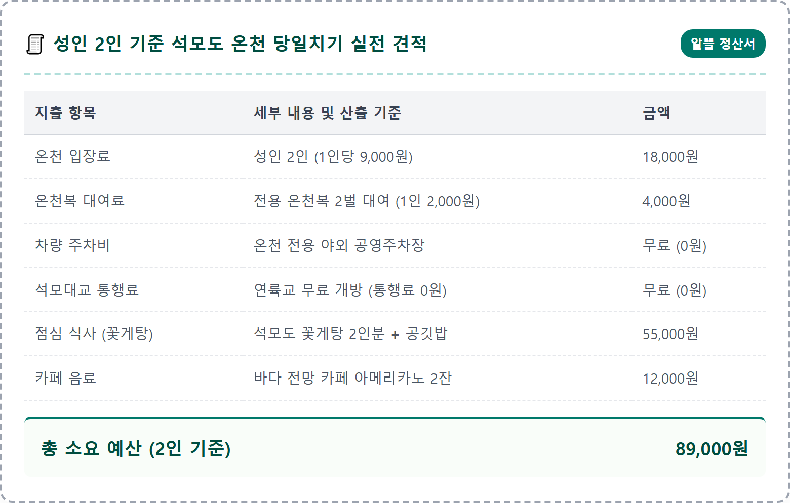
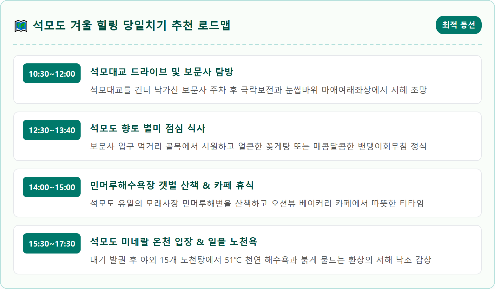
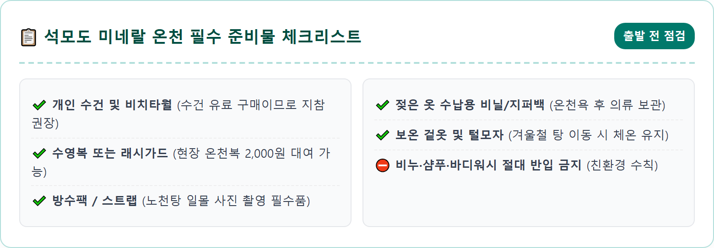
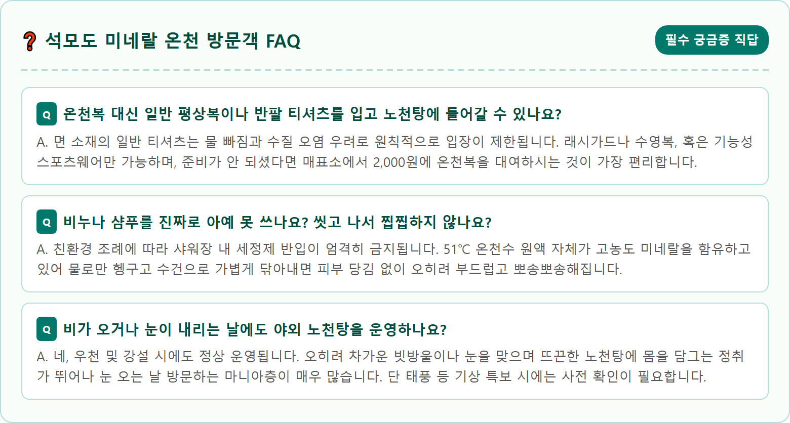

A stunning, photorealistic late autumn landscape photograph of the outdoor mineral hot springs in Seokmodo, Ganghwa Island, South Korea. Warm steam gently rising from natural stone-lined outdoor hot spring baths overlooking the vast West Sea. The dramatic golden hour sunset paints the sky and tidal mudflats in vibrant shades of deep amber, warm crimson, and soft purple. Steam swirls against the crisp, cool autumn evening air. Visitors wearing clean spa attire relax comfortably inside the steaming hot waters, peacefully admiring the glowing horizon. Ultra-high definition, cinematic lighting, 8k resolution, perfectly balanced composition, 1:1 aspect ratio.

차가운 초겨울 바람이 옷깃을 여미게 만드는 11월 중순이 찾아오면, 따뜻한 온기에 몸을 녹이며 한 주간 쌓인 피로를 씻어내고 싶은 간절함이 커집니다. 수도권에서 당일치기로 훌쩍 떠나 서해 바다의 광활한 풍광과 뜨끈한 천연 온천욕을 동시에 누릴 수 있는 곳을 꼽는다면 단연 인천 강화군 삼산면에 위치한 '석모도 미네랄 온천'이 손꼽힙니다.
석모도는 과거 외포리 선착장에서 배를 타고 건너가야 했던 아늑한 섬이었지만, 2017년 석모대교가 개통된 이후 서울과 인천, 경기 서부권 어디서든 자동차로 1시간 30분 안팎이면 편안하게 닿을 수 있는 접근성 최고의 힐링 여행지로 거듭났습니다. 섬 특유의 호젓한 정취는 고스란히 간직하면서도 이동의 번거로움이 사라져 사계절 내내 사랑받는 명소입니다.
특히 늦가을부터 한겨울에 이르는 동절기는 석모도 미네랄 온천이 가장 빛을 발하는 계절입니다. 맑고 차가운 겨울 공기를 얼굴에 쐬면서 목덜미 아래로는 뜨거운 천연 온천수에 몸을 담그는 노천욕의 묘미는 경험해보지 않은 사람은 결코 알 수 없는 황홀한 해방감을 선사합니다. 눈앞에 막힘없이 펼쳐지는 드넓은 서해 갯벌과 잔잔한 바다 물결을 바라보며 일상의 번잡함을 잊어보세요.
석모도 미네랄 온천이 전국 수많은 온천 중에서도 유독 특별하게 대접받는 이유는 인위적으로 물을 데우거나 희석하지 않는 '100% 천연 온천수 원액'을 그대로 공급하기 때문입니다. 지하 460m 깊이의 단단한 화강암 암반층에서 솟아오르는 온천수의 용출 온도는 무려 51℃에 달해 한겨울에도 별도의 가온 시설 없이 뜨거운 자연 온기 그대로를 체감할 수 있습니다.
이곳의 수질은 해수 온천 특유의 고농도 미네랄 성분을 다량 함유하고 있습니다. 칼슘, 칼륨, 마그네슘, 염화나트륨뿐만 아니라 피부 보습과 진정, 혈액 순환 촉진에 탁월한 효과가 있는 스트론튬 성분이 다량 농축되어 있어 온천욕을 마치고 나오면 피부가 매끄럽고 윤택해지는 것을 즉각적으로 느낄 수 있습니다.
실제로 한국지질자원연구원과 온천협회의 정밀 성분 분석 결과에 따르면, 석모도 미네랄 온천수는 관절염, 신경통, 아토피성 피부염 등 만성 피부 질환 완화와 근육 피로 회복에 매우 뛰어난 효능을 나타내는 것으로 입증되었습니다. 일반 수돗물로 씻어내지 않고 몸에 미네랄 피막을 형성하도록 자연 건조하는 것이 온천욕의 효과를 극대화하는 비결입니다.

석모도 미네랄 온천의 하이라이트는 단연 실내를 벗어나 바다를 향해 계단식으로 시원하게 펼쳐진 15개의 야외 노천탕입니다. 탕마다 온천수가 유입되는 위치와 깊이에 따라 38℃의 은은하고 부드러운 온탕부터 43℃를 웃도는 후끈한 열탕까지 수온이 다양하게 나뉘어 있어, 개인의 취향과 체질에 맞춰 탕을 옮겨 다니며 노천욕을 만끽할 수 있습니다.
이곳이 전국구 명소로 명성을 떨치게 된 결정적인 이유는 '노천탕 안에서 감상하는 서해 일몰' 때문입니다. 동절기 오후 4시 30분을 넘어서면 서쪽 지평선 너머로 해가 기울기 시작하면서 하늘과 바다, 드넓은 갯벌이 온통 붉은빛과 황금빛, 오렌지빛 그러데이션으로 타오릅니다. 김이 모락모락 피어오르는 뜨끈한 탕 속에 몸을 파묻은 채, 수평선 위로 떨어지는 붉은 태양을 바라보는 순간은 그 어떤 고급 호텔 인피니티 풀에서도 느낄 수 없는 깊은 낭만을 선사합니다.
낙조가 절정을 지나 어스름한 매직아워로 접어들면 서해 밤하늘에는 영롱한 별들이 하나둘 수놓아집니다. 바닷바람 소리와 따뜻한 물소리만이 가득한 고요한 밤바다를 배경으로 온천욕을 이어가다 보면, 한 주 동안 컴퓨터 모니터와 스마트폰 화면에 지쳤던 눈과 머리가 맑게 정화되는 기분을 만끽할 수 있습니다.
석모도 미네랄 온천은 강화군시설관리공단에서 공공으로 운영하는 시설인 만큼, 뛰어난 수질과 최고급 오션뷰 시설에 비해 이용 요금이 매우 합리적이고 투명하게 책정되어 있습니다. 2026년 현행 기준 이용 요금과 복장 규정을 사전에 정확히 파악하고 가시면 더욱 알뜰하고 쾌적하게 이용하실 수 있습니다.
입장료는 대인(중학생 이상) 9,000원, 소인(4~7세 유아) 6,000원입니다. 만 65세 이상 경로 우대자, 국가유공자, 장애인, 그리고 강화군민은 증빙 서류 지참 시 6,000원으로 감면 혜택을 받을 수 있습니다. 노천탕은 남녀가 함께 이용하는 혼성 구역이므로 반드시 적합한 복장을 착용해야 입장할 수 있습니다.
현장에서 상하의 온천복을 2,000원에 유료 대여할 수 있어 준비 없이 빈손으로 찾아와도 아무런 문제가 없습니다. 대여되는 온천복은 땀 배출과 통기성이 좋은 면 스판 소재의 반팔과 반바지 형태입니다. 개인 래시가드나 기능성 수영복, 혹은 물이 빠지지 않는 깨끗한 반팔 티셔츠와 반바지를 직접 챙겨오셔도 입장이 가능하므로 취향에 맞게 선택하시기 바랍니다.

석모도 미네랄 온천은 실내 탈의실과 야외 노천탕의 수용 인원을 일정 수준으로 엄격하게 제한하는 '정원제'로 운영됩니다. 탕 안이 지나치게 붐비는 것을 막고 이용객들에게 쾌적하고 안전한 온천욕 환경을 보장하기 위한 조치이지만, 주말이나 공휴일 오후에는 대기 시간이 1~2시간 이상 길어질 수 있으므로 전략적인 시간대 선택이 필수적입니다.
가장 추천하는 첫 번째 골든타임은 아침 개장 직후인 07:00~09:00 사이입니다. 이른 아침 안개가 자욱하게 깔린 고요한 서해 갯벌을 바라보며 밤새 차오른 신선한 온천수 원액을 가장 먼저 즐길 수 있는 특권을 누릴 수 있습니다. 대기표 없이 즉시 입장이 가능하여 오전 일찍 온천욕을 마치고 상쾌하게 섬 나들이를 시작할 수 있습니다.
일몰 감상이 목적이라면 오후 15:00 전후에 미리 도착하여 현장 키오스크에서 대기 번호표를 발권하는 것이 안전합니다. 대기 인원이 30~40팀 이상일 경우 1시간가량 소요되므로, 번호표를 뽑아두고 바로 옆 바닷가 산책로를 걷거나 인근 보문사를 먼저 다녀오면 버리는 시간 없이 완벽한 타이밍에 일몰 노천욕을 즐길 수 있습니다.

석모도 미네랄 온천을 방문하기 전 반드시 숙지해야 할 가장 중요한 규칙은 바로 '비누, 샴푸, 바디워시, 린스 등 일체의 세정제 사용 금지' 원칙입니다. 이는 인위적인 계면활성제가 하천으로 유입되어 갯벌 생태계를 오염시키는 것을 방지하고, 온천수 본연의 천연 미네랄 성분이 피부에 흡수되는 것을 돕기 위한 강화군의 엄격한 친환경 수칙입니다.
탈의실 내 샤워장 샤워기에서도 오직 100% 천연 온천수만 콸콸 쏟아져 나옵니다. 처음에는 거품 세정제를 쓰지 못해 낯설게 느껴질 수 있지만, 뜨거운 온천수로 몸을 깨끗이 헹구고 온천욕을 즐긴 뒤 그대로 물기만 닦아내면 피부에 풍부한 미네랄 보호막이 형성되어 하루 종일 로션을 바르지 않아도 당김 없이 촉촉함이 유지되는 신기한 경험을 하게 됩니다.
또한 시설 내에서는 환경 보호와 분실 방지를 위해 수건을 무료로 지급하지 않습니다. 기념 수건을 현장에서 별도로 유료 구매(약 3,000원)할 수 있지만, 비용 절약을 위해 집에서 여분의 세면 수건과 비치타월을 미리 챙겨오시는 것을 적극 권장합니다. 노천탕에서 스마트폰으로 사진을 남기실 분들은 방수팩과 젖은 옷을 담아갈 지퍼백을 준비하시면 매우 유용합니다.

석모도로 향하는 여정은 석모대교에 올라서는 순간부터 본격적인 힐링 드라이브로 이어집니다. 총연장 1.41km에 달하는 석모대교는 강화도 본섬의 내가면 황청리와 석모도의 삼산면 석포리를 웅장하게 연결하고 있습니다. 다리 위를 달리는 동안 양옆으로 펼쳐지는 시원한 바다 풍경과 갈매기 떼의 날갯짓은 일상의 답답함을 시원하게 날려줍니다.
서울 및 수도권에서 출발할 경우 김포한강로를 타고 대곶IC를 거쳐 초지대교를 건너는 남부 루트나, 48번 국도를 따라 강화대교를 건너 강화읍을 통과하는 북부 루트 중 교통 상황에 맞춰 선택하시면 됩니다. 평일 기준 서울 올림픽대로 여의도 기점에서 출발하면 약 1시간 20분, 인천 송도나 청라에서는 1시간 10분이면 석모대교를 건너 온천 주차장에 여유 있게 도착할 수 있습니다.
온천 전면에는 200여 대 이상의 차량을 동시 수용할 수 있는 대규모 전용 무료 주차장이 완비되어 있어 주차 걱정 없이 편리하게 이용할 수 있습니다. 전기차 이용객을 위한 급속 및 완속 충전기도 주차장 한편에 마련되어 있으므로 온천욕을 즐기는 동안 안심하고 충전해둘 수 있습니다.
온천욕만 즐기고 곧장 돌아오기 아쉽다면 석모도가 자랑하는 대표 명소들을 연계해 완벽한 당일치기 여행 코스를 완성해보세요. 온천에서 차량으로 불과 5분 거리에 위치한 '보문사'는 신라 선덕여왕 4년(635년)에 창건된 유서 깊은 천년고찰로, 양양 낙산사, 남해 보리암과 함께 우리나라 3대 해상 관음성지로 손꼽히는 영험한 기도 명당입니다.
보문사 경내를 둘러본 후 낙가산 눈썹바위 아래까지 이어진 419개의 소원 계단을 차분히 걸어 오르면, 거대한 천연 바위에 정교하게 새겨진 높이 9.2m의 '마애여래좌상'을 마주하게 됩니다. 바위 그늘 아래 서서 고개를 돌리면 발아래로 서해 앞바다와 점점이 떠 있는 유인도·무인도 섬들의 파노라마가 한눈에 내려다보여 가슴이 뻥 뚫리는 감동을 선사합니다.
온천에서 남쪽으로 10분가량 달리면 석모도 유일의 해수욕장인 '민머루해수욕장'을 만날 수 있습니다. 길이 1km의 백사장과 끝없이 펼쳐진 단단한 갯벌이 인상적인 이곳은 해변을 따라 조성된 아늑한 데크길을 산책하기에 최적입니다. 썰물 때면 게와 고둥이 살아 움직이는 생생한 갯벌 생태를 관찰할 수 있으며, 바다를 조망할 수 있는 감성 베이커리 카페들이 즐비해 커피 한 잔의 여유를 즐기기에 안성맞춤입니다.
따뜻한 온천수에 몸을 담가 노폐물을 빼고 나면 기분 좋은 허기짐이 밀려오기 마련입니다. 강화도와 석모도 일대는 예로부터 청정 갯벌과 풍부한 어장을 품고 있어 사계절 내내 신선한 해산물 먹거리가 풍성하기로 유명합니다.
석모도 온천 인근과 보문사 진입로 식당가에서 가장 인기 있는 대표 메뉴는 단연 얼큰하고 시원한 '강화 꽃게탕'입니다. 늦가을 살과 알이 꽉 찬 서해안 꽃게를 듬뿍 넣고 단호박, 무, 팽이버섯을 곁들여 끓여낸 국물은 한 숟가락 뜨는 순간 온몸에 깊은 감칠맛과 시원함이 퍼져나갑니다. 꽃게 살을 발라먹은 뒤 남은 진국에 라면 사리나 수제비를 넣어 끓여 먹는 맛은 여행의 피로를 완벽하게 날려줍니다.
또 하나의 빼놓을 수 없는 강화 별미는 새콤달콤하게 무쳐낸 '밴댕이회무침'입니다. 기름기가 자르르 흐르는 고소한 밴댕이 살에 아삭한 미나리와 양배추, 매콤한 초고추장을 넣고 버무려 밥 위에 얹어 비벼 먹는 밴댕이 회덮밥은 잃었던 입맛을 단숨에 돋워줍니다. 쌉싸름하고 알싸한 맛이 일품인 강화 특산품 '순무김치'와 달콤한 '강화 인삼 막걸리' 한 잔을 곁들이면 더할 나위 없이 완벽한 미식 여행이 완성됩니다.

| 구분 | 세부 내용 | 비고 및 이용 안내 |
|---|---|---|
| 위치 주소 | 인천광역시 강화군 삼산면 삼산남로 865-17 | 내비게이션: 석모도미네랄온천 |
| 운영 시간 | 07:00 ~ 20:00 (동절기 기준) | 입장 마감 18:00 / 매주 화요일 정기 휴무 |
| 이용 요금 | 성인 9,000원 / 소인(4~7세) 6,000원 | 경로·국가유공자·강화군민 6,000원 |
| 대여 요금 | 전용 온천복 2,000원 (수건 개별 지참) | 개인 수영복·래시가드 착용 허용 |
| 주차 안내 | 온천 전면 대형 공영주차장 완비 | 전액 무료 주차 / 전기차 충전기 구비 |
| 인근 명소 | 보문사(차량 5분), 민머루해변(차량 10분) | 당일치기 섬 여행 연계 코스 최적 |